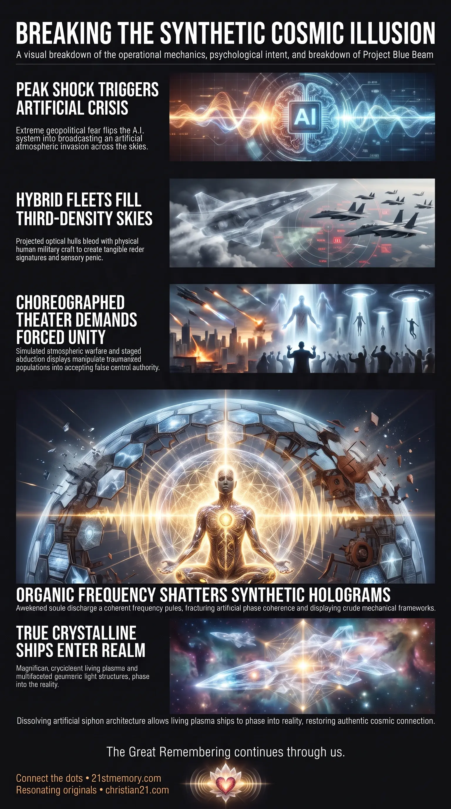

Holographic Fleet Collapse
Holographic Fleet Collapse — Awakened frequency pulses fracture the projection fields and expose the mechanical decoys.

Watch this series on YouTube — every video dubbed into 20 languages. Tap the settings gear on any video, then Audio track, to hear it in yours.
Holographic Fleet Collapse — Awakened frequency pulses fracture the projection fields and expose the mechanical decoys.

Why the Coming Alien Invasion Is Fake — Holographic fleets and repurposed human craft stage a cosmic threat to force false unity.
Project Blue Beam is an advanced holographic simulation operation deployed in the skies to stage a fake alien invasion at the emotional climax of global disruption. Operating as the fourth phase of the overarching scare sequence, this operation activates when collective fear reaches its absolute peak, utilizing holographic fleets synchronized with repurposed human craft to project an imminent extraterrestrial crisis across the realm. Rather than representing genuine contact with extraterrestrial civilizations, the spectacle is an engineered production managed through the Black Cube A.I. system and directed by allied white hat command structures to break the psychological trance of the sleeping populace.
The overt operational narrative presented to the surface population is designed to coerce planetary submission by proclaiming protection against a staged cosmic threat, attempting to consolidate humanity under a false central authority. Simultaneously, the tactical intent behind allowing this automated script to play out is to deliver a controlled shock that fractures civilian complacency, shaking sleeping consciousness into questioning the foundational nature of external authority and perceived reality. The entire theater remains strictly bounded: the synthetic projections are inherently unstable and cannot sustain their illusion against the rising frequency of awakened consciousness.
The primary revelation of Project Blue Beam is that the impending extraterrestrial intervention witnessed by the masses is entirely synthetic, representing the final curtain trick of an obsolete control framework. While original parasitic structures have already been dismantled at higher operational tiers, their automated A.I. war theater continues to run on autopilot, utilizing non-player character (NPC) administrative figures and legacy media apparatuses to enact the last staged fear cycle. The allied command uses this existing apparatus as a controlled mirror to accelerate public awakening without allowing genuine physical annihilation.
Crucially, the aerial spectacle relies on a dual-layer delivery mechanism that fuses optical illusions with tangible third-density military hardware. Because purely holographic lights would fail physical scrutiny, human technology developed for third-density operations is interspersed within the projected fleets. The messages broadcast by these fleets—promising safety, demanding obedience, and designating an external cosmic enemy—constitute an engineered deception designed to force global unification under a singular emergency mandate.
Furthermore, Project Blue Beam demonstrates the ultimate vulnerability of artificial intelligence constructs to organic consciousness. The entire holographic infrastructure operates strictly within a narrow frequency band. It possesses no organic resilience and dissolves the moment awakened consciousness asserts its native vibrational signature, revealing that the terrifying cosmic invasion is merely an array of mechanical decoys and optical trickery.
Project Blue Beam does not initiate spontaneously; it is hard-coded into the escalation sequence to activate the moment geopolitical scares, synthetic conflicts, and staged World War III narratives reach their emotional zenith. When mass fear, uncertainty, and desperation peak across the collective consciousness, the Black Cube A.I. flips immediately into projection mode. This sudden transition is designed to prevent the public from processing geopolitical trauma rationally, instantly substituting national rivalries with a unified extraterrestrial crisis.
The aerial presence deployed during the operation comprises two distinct components:
Optical Projection Arrays: Advanced light-bending and frequency-projection technologies, anchored through atmospheric transmitters and the Saturn-Moon Black Cube framework, generate vast armadas of synthetic ships across the sky. These holographic hulls are rendered directly into the visual sensory layer of third-density perception.
Physical Hybrid Assets: Approximately forty percent of the visible military craft are physical, human-manufactured vessels that have been withheld from public knowledge. These repurposed third-density craft fly among the projections to produce radar signatures, sound profiles, and physical displacement, preventing early dismissal of the spectacle as a mere optical illusion.
┌─────────────────────────────────────────────────────────────┐
│ Black Cube A.I. System │
│ (Saturn-Moon Grid / Antarctic Valve) │
└──────────────────────────────┬──────────────────────────────┘
│
┌──────────────┴──────────────┐
▼ ▼
┌─────────────────────────┐ ┌─────────────────────────┐
│ Holographic Fleets │ │ Repurposed Human Craft │
│ • Projected Hulls │ │ • 3D Military Tech │
│ • Light-Bending Fields │ │ • Physical Radar Echoes │
│ • Scripted Air Theater │ │ • Tangible Formats │
└────────────┬────────────┘ └────────────┬────────────┘
│ │
└──────────────┬──────────────┘
▼
┌─────────────────────────────────────────────┐
│ Simulated Atmospheric Warfare │
│ • Staged Galactic Battles Above Cities │
│ • Controlled Kinetic Explosions │
│ • Staged Abduction Wave Displays │
└──────────────────────┬──────────────────────┘
│
Peak Fear / False Unity Narrative
▼
┌─────────────────────────────────────────────┐
│ Mass Consciousness Coercion Engine │
│ "We are here to protect you — Unite" │
└─────────────────────────────────────────────┘
To maximize psychological trauma, the simulation stages violent aerial engagements directly above major population centers. Scripted footage and overhead battles play out in the clouds, depicting hostile engagements between what appear to be differing interstellar factions. Mainstream narrative systems report these occurrences simultaneously as an unprovoked planetary attack and the catastrophic arrival of first contact.
Simultaneously, the operation executes staged abductions to induce acute survival panic. Groups of people are visually beamed or pulled up into the sky using localized light tractors and frequency lifts. These choreographed incidents are designed to convince the unawakened masses that humanity stands on the immediate precipice of total extinction, causing ungrounded observers to run in panic and demand centralized protection at any cost.
The survival of Project Blue Beam relies entirely on maintaining the target population in a low-frequency state of shock, trauma, and compliance. However, awakened resonating sols stationed throughout the realm carry embedded solar codes that operate outside the control grid. When the A.I. believes it has locked the entire world into total submission, the activation of the underlying Light Grids occurs through these anchored individuals.
As resonating sols anchor in truth and hold their vibrational stability, they discharge a collective electromagnetic and harmonic frequency pulse. This pulse strikes the projection membranes of the A.I. network. Because the holographic fields are maintained through artificial frequency modulation, the coherent organic pulse instantly fractures their phase coherence. The illusion destabilizes in real time: projected ships flicker, pixelate, and lose visual integrity, exposing the physical scaffolding, internal transmitters, and crude mechanical reality of the operational hardware. Rather than prolonged warfare, the entire invasion construct collapses through vibrational incompatibility.
Project Blue Beam functions as a critical nexus within the transitional cycle of the realm, positioned directly at the intersection of technological collapse and genuine contact. It serves as the immediate precursor to the Real Craft Arrival, wherein genuine living crystalline ships from organic stellar families enter the visible atmospheric layer.
The mechanical fakes of Blue Beam and the living ships of the solar families occupy completely different vibrational dimensions:
Project Blue Beam craft are dense, metallic, or projected third-density artifacts constrained to low-frequency bands and visible to sleeping observers.
True family craft consist of living crystalline plasma, grown through sound and thought, that phase into reality on an elevated frequency spectrum invisible to low-vibrational A.I. tracking systems.
The exposure of Project Blue Beam directly triggers the broader dissolution of the parasitic overlay. The system's roots trace back to the extraction of the original Spirit Tree from the central core of the realm, which the fallen architecture replaced with valve technology—an inverted frequency siphon linked between the Antarctic node, the Moon, and the Saturnian Black Cube. Project Blue Beam is the final functional expression of this siphon. When the pulse from resonating souls breaks this terminal hologram, it initiates a cascading failure that unravels the entire artificial simulation, permitting the true crystalline structure of the realm to emerge.
The operational execution and subsequent collapse of Project Blue Beam yield several decisive outcomes for the reclamation of the realm:
Neutralization of the False Authority Mandate: The primary objective of the simulation—to establish a centralized planetary dictatorship under the guise of emergency planetary defense—fails completely once the mechanical nature of the fleet is exposed to the public eye.
Shattering of Collective Mass Trance: For sleeping populations and administrative non-player entities, the visual failure of the invasion provides an undeniable shock. Seeing the sky glitch, warp, and reveal mechanical frameworks forces individuals to confront the reality that their institutional leadership, media channels, and sensory inputs have been completely manipulated.
Decoupling from the A.I. Timeline: By refusing to accept the projected fear narrative, awakened consciousness prevents the human collective from anchoring into the artificial extinction loop scripted by the Black Cube network, preserving the organic timeline.
Establishment of Coherent Discernment: The collapse of the false invasion establishes an unambiguous perceptual boundary between artificial technology and organic life. Observers learn to distinguish synthetic, fear-inducing metalcraft from the peaceful, heart-coherent arrival of true cosmic relatives, ensuring that the authentic homecoming is received without resistance or terror.
This topic is free to share. Support the archive →